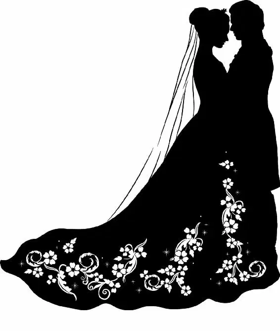

Ella and Kit stood quietly, hand in hand. In front of them were the two newest additions to the palace’s royal portrait gallery— one of Ella’s mother and one of her father. Ella smiled and squeezed Kit’s hand. So much had changed in such a short time. Seeing her family there among Kit’s, Ella felt love and happiness surge through her.
Kit smiled. “We must have a portrait of you painted,” he teased, bringing them both back to the night of the ball, when they had stood in that very spot.
“Oh, no,” Ella teased, playing along. “I do hate myself in paintings.”
Kit put a hand to his heart, as though struck. “Be kind,” he said, grinning.
“And have courage,” Ella replied, this back and forth now a part of their daily routine. A way to remind themselves of all they had and all they could have lost if not for their strength and conviction.
“And all will be well,” Kit finished.
They looked at the doors at the end of the gallery. “Are you ready?” Ella asked as they began to walk toward them.
“For anything,” Kit replied. “So long as it’s with you.”
Together, they pushed the doors open and walked out into the sunshine, where their subjects awaited the royal wedding. And as they said their vows and promised to love and cherish each other, it was clear to all those who had gathered that this fairy tale would end as all fairy tales should… with a happily ever after.
